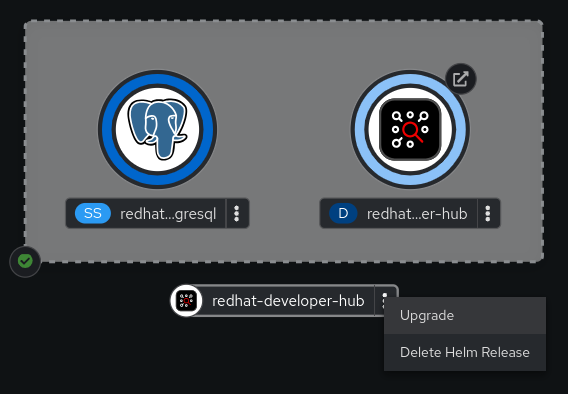
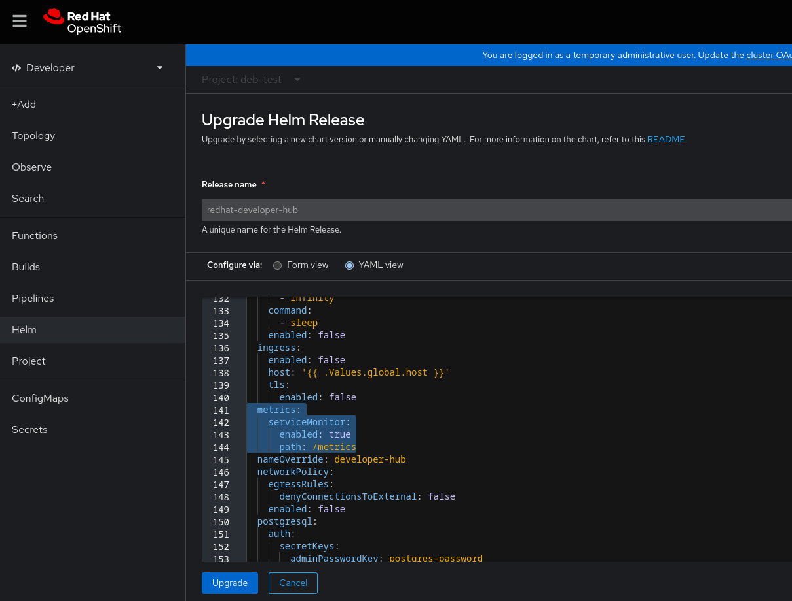

Monitoring and logging
Tracking performance and capturing insights with monitoring and logging tools in Red Hat Developer Hub
Abstract
1. Enabling observability for Red Hat Developer Hub on OpenShift Container Platform
In OpenShift Container Platform, metrics are exposed through an HTTP service endpoint under the /metrics canonical name. You can create a ServiceMonitor custom resource (CR) to scrape metrics from a service endpoint in a user-defined project.
1.1. Enabling metrics monitoring in a Red Hat Developer Hub Operator installation on an OpenShift Container Platform cluster
You can enable and view metrics for an Operator-installed Red Hat Developer Hub instance from the Developer perspective of the OpenShift Container Platform web console.
Prerequisites
- Your OpenShift Container Platform cluster has monitoring for user-defined projects enabled.
- You have installed Red Hat Developer Hub on OpenShift Container Platform using the Red Hat Developer Hub Operator.
-
You have installed the OpenShift CLI (
oc).
Procedure
Currently, the Red Hat Developer Hub Operator does not support creating a ServiceMonitor custom resource (CR) by default. You must complete the following steps to create a ServiceMonitor CR to scrape metrics from the endpoint.
Create the
ServiceMonitorCR as a YAML file:apiVersion: monitoring.coreos.com/v1 kind: ServiceMonitor metadata: name: <developer_hub_service_monitor_name> 1 namespace: <rhdh_namespace_name> 2 labels: app.kubernetes.io/instance: <rhdh_cr_name> 3 app.kubernetes.io/name: Backstage spec: namespaceSelector: matchNames: - <rhdh_namespace_name> 4 selector: matchLabels: app.kubernetes.io/instance: <deployment_name> 5 app.kubernetes.io/name: <rhdh_cr_type> 6 endpoints: - port: http-metrics path: '/metrics'
- 1
- The name of your
ServiceMonitorresource, for example,developer_hub_service_monitor. - 2
- The namespace where your
ServiceMonitorwill live, for example,my-rhdh-project. - 3
- The label name identifying the
ServiceMonitorCR instance, for example,my-rhdh-custom-resource. - 4
- The namespace where your RHDH instance is installed, for example,
my-rhdh-project. - 5
- The name of your RHDH deployment, for example,
developer-hub. - 6
- The name of your RHDH application, for example,
backstage.
Notespec.selector.matchLabelsconfiguration must match the labels of your RHDH installation.Apply the
ServiceMonitorCR by running the following command:oc apply -f <filename>
Verification
- From the Developer perspective in the OpenShift Container Platform web console, select the Observe view.
- Click the Metrics tab to view metrics for Red Hat Developer Hub pods.
-
From the Developer perspective in the OpenShift Container Platform web console, click Project > Services and verify the labels for
backstage-developer-hub.
1.2. Enabling metrics monitoring in a Helm chart installation on an OpenShift Container Platform cluster
You can enable and view metrics for a Red Hat Developer Hub Helm deployment from the Developer perspective of the OpenShift Container Platform web console.
Prerequisites
- Your OpenShift Container Platform cluster has monitoring for user-defined projects enabled.
- You have installed Red Hat Developer Hub on OpenShift Container Platform using the Helm chart.
Procedure
- From the Developer perspective in the OpenShift Container Platform web console, select the Topology view.
Click the overflow menu of the Red Hat Developer Hub Helm chart, and select Upgrade.
On the Upgrade Helm Release page, select the YAML view option in Configure via, then configure the
metricssection in the YAML, as shown in the following example:upstream: # ... metrics: serviceMonitor: enabled: true path: /metrics port: http-metrics # ...- Click Upgrade.
Verification
- From the Developer perspective in the OpenShift Container Platform web console, select the Observe view.
- Click the Metrics tab to view metrics for Red Hat Developer Hub pods.
Additional resources
2. Monitoring and logging with Amazon Web Services (AWS) in Red Hat Developer Hub
In the Red Hat Developer Hub, monitoring and logging are facilitated through Amazon Web Services (AWS) integration. With features like Amazon CloudWatch for real-time monitoring and Amazon Prometheus for comprehensive logging, you can ensure the reliability, scalability, and compliance of your Developer Hub application hosted on AWS infrastructure.
This integration enables you to oversee, diagnose, and refine your applications in the Red Hat ecosystem, leading to an improved development and operational journey.
2.1. Monitoring with Amazon Prometheus
Red Hat Developer Hub provides Prometheus metrics related to the running application. For more information about enabling or deploying Prometheus for EKS clusters, see Prometheus metrics in the Amazon documentation.
To monitor Developer Hub using Amazon Prometheus, you need to create an Amazon managed service for the Prometheus workspace and configure the ingestion of the Developer Hub Prometheus metrics. For more information, see Create a workspace and Ingest Prometheus metrics to the workspace sections in the Amazon documentation.
After ingesting Prometheus metrics into the created workspace, you can configure the metrics scraping to extract data from pods based on specific pod annotations.
2.1.1. Configuring annotations for monitoring
You can configure the annotations for monitoring in both Helm deployment and Operator-backed deployment.
- Helm deployment
To annotate the backstage pod for monitoring, update your
values.yamlfile as follows:upstream: backstage: # --- TRUNCATED --- podAnnotations: prometheus.io/scrape: 'true' prometheus.io/path: '/metrics' prometheus.io/port: '9464' prometheus.io/scheme: 'http'- Operator-backed deployment
Procedure
As an administrator of the operator, edit the default configuration to add Prometheus annotations as follows:
# Update OPERATOR_NS accordingly OPERATOR_NS=rhdh-operator kubectl edit configmap backstage-default-config -n "${OPERATOR_NS}"Find the
deployment.yamlkey in the ConfigMap and add the annotations to thespec.template.metadata.annotationsfield as follows:deployment.yaml: |- apiVersion: apps/v1 kind: Deployment # --- truncated --- spec: template: # --- truncated --- metadata: labels: rhdh.redhat.com/app: # placeholder for 'backstage-<cr-name>' # --- truncated --- annotations: prometheus.io/scrape: 'true' prometheus.io/path: '/metrics' prometheus.io/port: '9464' prometheus.io/scheme: 'http' # --- truncated ---- Save your changes.
Verification
To verify if the scraping works:
Use
kubectlto port-forward the Prometheus console to your local machine as follows:kubectl --namespace=prometheus port-forward deploy/prometheus-server 9090
-
Open your web browser and navigate to
http://localhost:9090to access the Prometheus console. -
Monitor relevant metrics, such as
process_cpu_user_seconds_total.
2.2. Logging with Amazon CloudWatch logs
Logging within the Red Hat Developer Hub relies on the winston library. By default, logs at the debug level are not recorded. To activate debug logs, you must set the environment variable LOG_LEVEL to debug in your Red Hat Developer Hub instance.
2.2.1. Configuring the application log level
You can configure the application log level in both Helm deployment and Operator-backed deployment.
- Helm deployment
To update the logging level, add the environment variable
LOG_LEVELto your Helm chart’svalues.yamlfile:upstream: backstage: # --- Truncated --- extraEnvVars: - name: LOG_LEVEL value: debug- Operator-backed deployment
You can modify the logging level by including the environment variable
LOG_LEVELin your custom resource as follows:spec: # Other fields omitted application: extraEnvs: envs: - name: LOG_LEVEL value: debug
2.2.2. Retrieving logs from Amazon CloudWatch
The CloudWatch Container Insights are used to capture logs and metrics for Amazon EKS. For more information, see Logging for Amazon EKS documentation.
To capture the logs and metrics, install the Amazon CloudWatch Observability EKS add-on in your cluster. Following the setup of Container Insights, you can access container logs using Logs Insights or Live Tail views.
CloudWatch names the log group where all container logs are consolidated in the following manner:
/aws/containerinsights/<ClusterName>/application
Following is an example query to retrieve logs from the Developer Hub instance:
fields @timestamp, @message, kubernetes.container_name | filter kubernetes.container_name in ["install-dynamic-plugins", "backstage-backend"]
3. Monitoring and logging with Azure Kubernetes Services (AKS) in Red Hat Developer Hub
Monitoring and logging are integral aspects of managing and maintaining Azure Kubernetes Services (AKS) in Red Hat Developer Hub. With features like Managed Prometheus Monitoring and Azure Monitor integration, administrators can efficiently monitor resource utilization, diagnose issues, and ensure the reliability of their containerized workloads.
3.1. Enabling Azure Monitor metrics
To enable managed Prometheus monitoring, use the -enable-azure-monitor-metrics option within either the az aks create or az aks update command, depending on whether you’re creating a new cluster or updating an existing one, such as:
az aks create/update --resource-group <your-ResourceGroup> --name <your-Cluster> --enable-azure-monitor-metrics
The previous command installs the metrics add-on, which gathers Prometheus metrics. Using the previous command, you can enable monitoring of Azure resources through both native Azure Monitor metrics. You can also view the results in the portal under Monitoring → Insights. For more information, see Monitor Azure resources with Azure Monitor.
Furthermore, metrics from both the Managed Prometheus service and Azure Monitor can be accessed through Azure Managed Grafana service. For more information, see Link a Grafana workspace section.
By default, Prometheus uses the minimum ingesting profile, which optimizes ingestion volume and sets default configurations for scrape frequency, targets, and metrics collected. The default settings can be customized through custom configuration. Azure offers various methods, including using different ConfigMaps, to provide scrape configuration and other metric add-on settings. For more information about default configuration, see Default Prometheus metrics configuration in Azure Monitor and Customize scraping of Prometheus metrics in Azure Monitor managed service for Prometheus documentation.
3.2. Configuring annotations for monitoring
You can configure the annotations for monitoring Red Hat Developer Hub specific metrics in both Helm deployment and Operator-backed deployment.
- Helm deployment
To annotate the backstage pod for monitoring, update your
values.yamlfile as follows:upstream: backstage: # --- TRUNCATED --- podAnnotations: prometheus.io/scrape: 'true' prometheus.io/path: '/metrics' prometheus.io/port: '9464' prometheus.io/scheme: 'http'- Operator-backed deployment
Procedure
As an administrator of the operator, edit the default configuration to add Prometheus annotations as follows:
# Update OPERATOR_NS accordingly OPERATOR_NS=rhdh-operator kubectl edit configmap backstage-default-config -n "${OPERATOR_NS}"Find the
deployment.yamlkey in the ConfigMap and add the annotations to thespec.template.metadata.annotationsfield as follows:deployment.yaml: |- apiVersion: apps/v1 kind: Deployment # --- truncated --- spec: template: # --- truncated --- metadata: labels: rhdh.redhat.com/app: # placeholder for 'backstage-<cr-name>' # --- truncated --- annotations: prometheus.io/scrape: 'true' prometheus.io/path: '/metrics' prometheus.io/port: '9464' prometheus.io/scheme: 'http' # --- truncated ---- Save your changes.
Verification
To verify if the scraping works, navigate to the corresponding Azure Monitor Workspace and view the metrics under Monitoring → Metrics.
3.3. Viewing logs with Azure Kubernetes Services (AKS)
You can access live data logs generated by Kubernetes objects and collect log data in Container Insights within AKS.
Prerequisites
- You have deployed Developer Hub on AKS.
For more information, see Installing Red Hat Developer Hub on Microsoft Azure Kubernetes Service.
Procedure
- View live logs from your Developer Hub instance
- Navigate to the Azure Portal.
-
Search for the resource group
<your-ResourceGroup>and locate your AKS cluster<your-Cluster>. - Select Kubernetes resources → Workloads from the menu.
-
Select the
<your-rhdh-cr>-developer-hub(in case of Helm Chart installation) or<your-rhdh-cr>-backstage(in case of Operator-backed installation) deployment. - Click Live Logs in the left menu.
Select the pod.
NoteThere must be only single pod.
Live log data is collected and displayed.
- View real-time log data from the Container Engine
- Navigate to the Azure Portal.
-
Search for the resource group
<your-ResourceGroup>and locate your AKS cluster<your-Cluster>. - Select Monitoring → Insights from the menu.
- Go to the Containers tab.
- Find the backend-backstage container and click it to view real-time log data as it’s generated by the Container Engine.